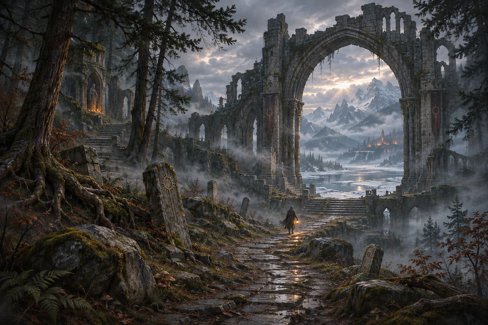

Old stones and untamed country
Follow cracked causeways past frozen meres, timbered hollows, and buried courts. Every region holds its own hazards and rewards for those who linger.
An action RPG by Arianna

New skills in the wild. New power in the blood.
Claim a skill from the untamed wilds.
Support and enhance it to bend the rules of combat.
The open frontier
Beyond the settlement walls lie shifting borders, forgotten labyrinths, roads contested by iron, tooth and blood. sunken ruins and more. Choose your route and decide how far to press your luck.

A vessel for your ambition
A class gives your vessel its initial footing and instincts. Honour that discipline to the end, or let a strange discovery pull you down an unwritten path.
Steel / Fury / Momentum
Abandon caution to build momentum with heavy blows, then carve through surrounding packs in a relentless whirlwind sustained by leached life.
Explore this classFlame / Storm / Ruin
Answer advancing ranks with fire and tempest, laying waste to crowded ground before a blade can ever reach your robes.
Explore this classBone / Binding / Dominion
Call bone from the earth to bear the brunt of battle, blighting the living with hexes and venom while your legion advances.
Explore this classProve yourself through a Vocation's trials to awaken its distinct passive tree. A calling earned in one life remains available to every vessel that follows.
Includes a path you may prefer to find in the world.
Power uncovered in the wild
Every skill you claim can be reshaped. Alter its very nature, guide its growth, and seek out the artifacts that fulfill its potential.
A new way to fight.
Bend and shape how the skill acts.
Bind skill, artifacts, and power into one design.
Explore skills, supports, and uniques in the database.
Interactive build planner
Explore more than two thousand passive nodes, calculate your stat totals, and share complete build links straight from your browser.

Mortal stakes and lasting inheritance
Playing as a Mortal gives every fight real weight. When your character falls, that run concludes, but a portion of the essence and unlocks you gathered carries over to your account so your next vessel starts on firmer ground.
Retrace your steps to claim what was left in the dirt, widen the paths open to your bloodline, or in time swear the Immortal covenant and refuse the final sleep.
Recruit an armed mercenary in town, party up with friends online, or fight side by side in local couch co-op.
Ready when you are
Play immediately in your browser with zero setup, or download the desktop launcher for Windows, Linux, and Steam Deck.
Play in browser No install · Progress saves in this browserA world in the making
Hollow Wake is currently in prototype development. Visual assets, balance, and mechanics are actively evolving, and version updates may reset saved data. The web and desktop builds provide the core game while seamless world generation is developed in parallel.
Share your experience